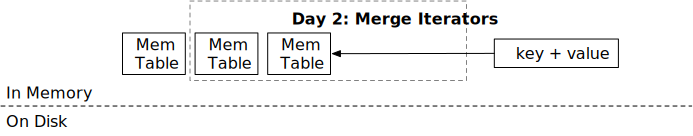

合并迭代器

在本章中，您将：
- 实现 memtable 迭代器。
- 实现合并迭代器。
- 实现 LSM 读取路径
scan用于 memtables。
要将测试用例复制到初始代码并运行它们，
cargo x copy-test --week 1 --day 2
cargo x scheck
任务 1：Memtable 迭代器
在本章中，我们将实现 LSM scan 接口。scan 返回一个范围内的有序键值对，使用迭代器 API。在前一章中，您已经实现了 get API 和创建不可变 memtables 的逻辑，现在您的 LSM 状态应该有多个 memtables。您需要首先在单个 memtable 上创建迭代器，然后在所有 memtables 上创建合并迭代器，最后实现迭代器的范围限制。
在本任务中，您需要修改：
src/mem_table.rs
所有 LSM 迭代器都实现了 StorageIterator 特性。它有 4 个函数：key、value、next 和 is_valid。当迭代器创建时，其光标会停在某个元素上，key / value 将返回满足起始条件（即起始键）的 memtable/block/SST 中的第一个键。这两个接口将返回一个 &[u8] 以避免复制。请注意，此迭代器接口与 Rust 风格的迭代器不同。
next 将光标移动到下一个位置。is_valid 返回迭代器是否已到达末尾或出错。您可以假设只有在 is_valid 返回 true 时才会调用 next。会有一个 FusedIterator 包装器，用于阻止在迭代器无效时调用 next，以避免用户误用迭代器。
回到 memtable 迭代器。您应该已经发现迭代器没有任何生命周期与之关联。想象一下，您创建了一个 Vec 并调用 vec.iter()，迭代器类型将是类似 VecIterator<'a>，其中 'a 是 vec 对象的生命周期。这同样适用于 SkipMap，其 iter API 返回一个带有生命周期的迭代器。然而，在我们的情况下，我们不希望在迭代器上有这样的生命周期，以避免使系统过于复杂（且难以编译...）。
如果迭代器没有生命周期泛型参数，我们应该确保每当迭代器被使用时，底层 skiplist 对象没有被释放。唯一实现这一点的方法是将 Arc 对象放入迭代器本身。要定义这样的结构，
#![allow(unused)] fn main() { pub struct MemtableIterator { map: Arc>, iter: SkipMapRangeIter<'???>, } }
好了，问题来了：我们希望表达迭代器的生命周期与结构中的 map 相同。我们该怎么做呢？
这是您在本教程中遇到的第一个也是最棘手的 Rust 语言问题——自引用结构。如果可以写成这样：
#![allow(unused)] fn main() { pub struct MemtableIterator { // <- 带有生命周期 'this map: Arc>, iter: SkipMapRangeIter<'this>, } }
那么问题就解决了！您可以通过一些第三方库如 ouroboros 来实现这一点。它提供了一种定义自引用结构的简单方法。也可以使用不安全的 Rust 来实现这一点（实际上，ouroboros 本身在内部使用了不安全的 Rust...）
我们已经为您定义了自引用的 MemtableIterator 字段，您需要实现 MemtableIterator 和 Memtable::scan API。
任务 2：合并迭代器
在本任务中，您需要修改：
src/iterators/merge_iterator.rs
现在您有多个 memtables，并且您将创建多个 memtable 迭代器。您需要合并来自 memtables 的结果，并将每个键的最新版本返回给用户。
MergeIterator 在内部维护一个二叉堆。请注意，您需要处理错误（即当迭代器无效时）并确保最新版本的键值对出现。
例如，如果我们有以下数据：
iter1: b->del, c->4, d->5
iter2: a->1, b->2, c->3
iter3: e->4
合并迭代器输出的序列应该是：
a->1, b->del, c->4, d->5, e->4
合并迭代器的构造函数接受一个迭代器向量。我们假设索引较低的（即第一个）具有最新的数据。
在使用 Rust 二叉堆时，您可能会发现 peek_mut 函数很有用。
#![allow(unused)] fn main() { let Some(mut inner) = heap.peek_mut() { *inner += 1; // <- 对内部项进行一些修改 } // 当 PeekMut 引用被丢弃时，二叉堆会自动重新排序。 let Some(mut inner) = heap.peek_mut() { PeekMut::pop(inner) // <- 从堆中弹出 } }
一个常见的陷阱是错误处理。例如，
#![allow(unused)] fn main() { let Some(mut }